Art
 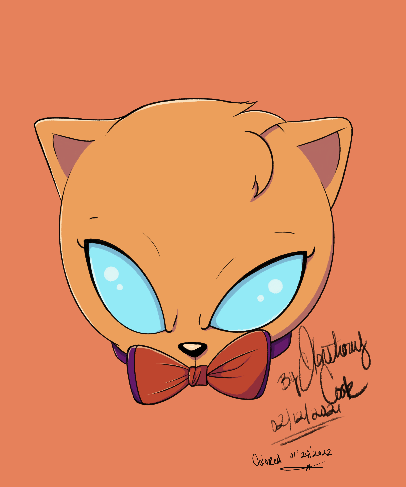
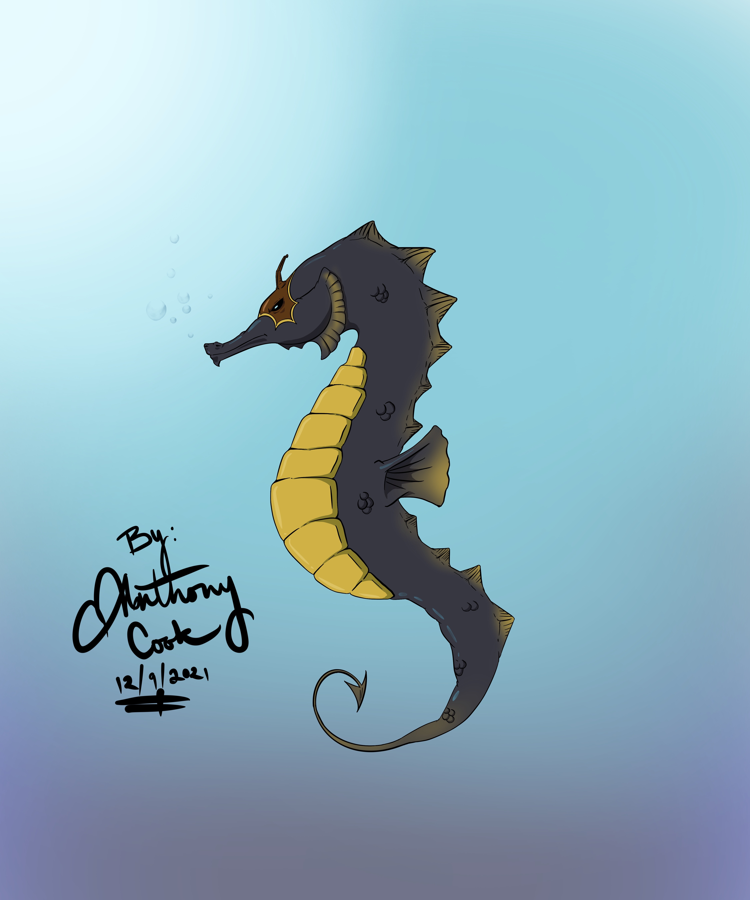
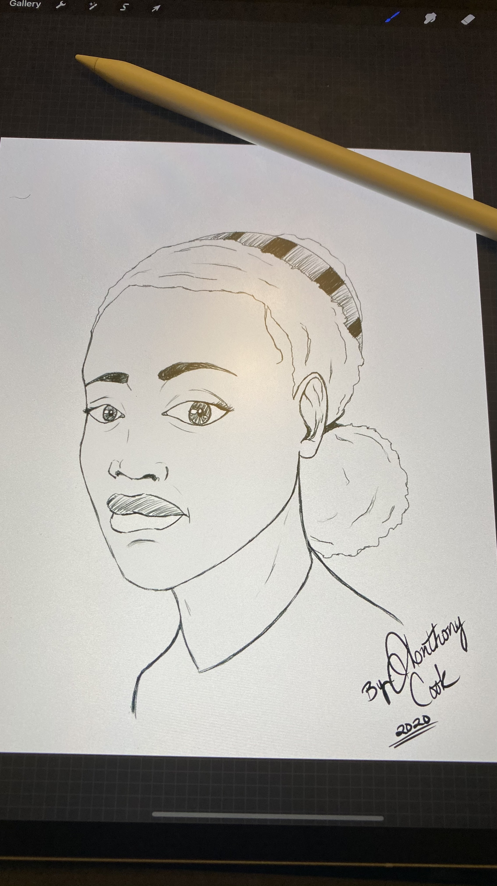
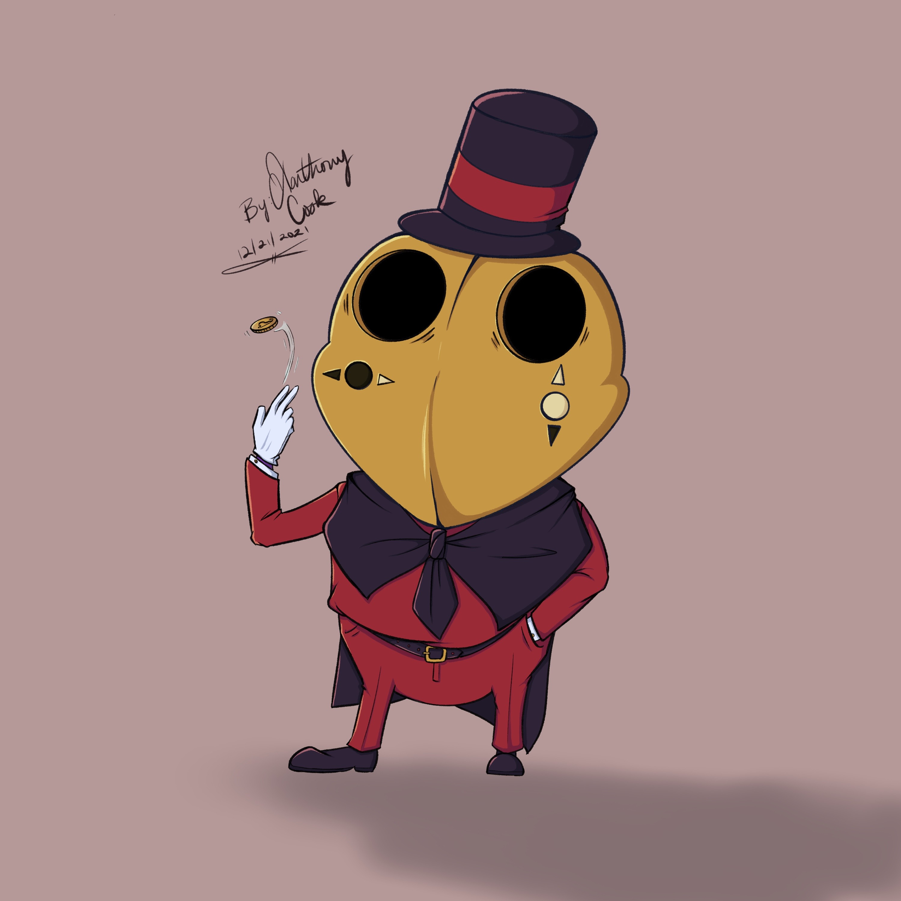
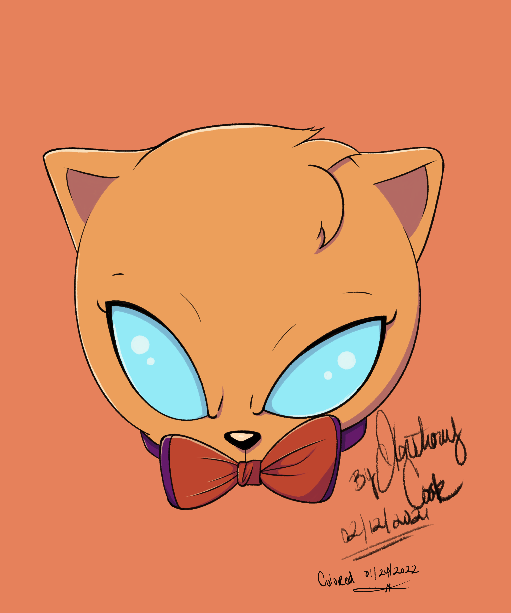
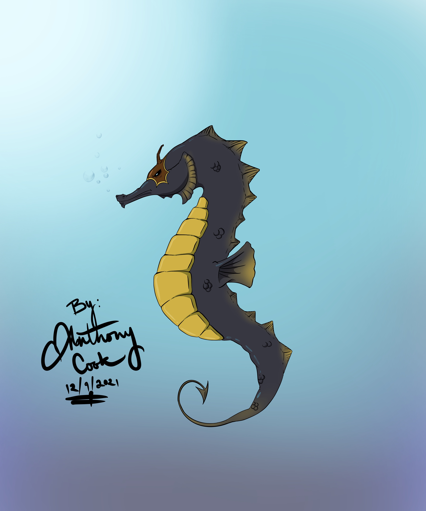
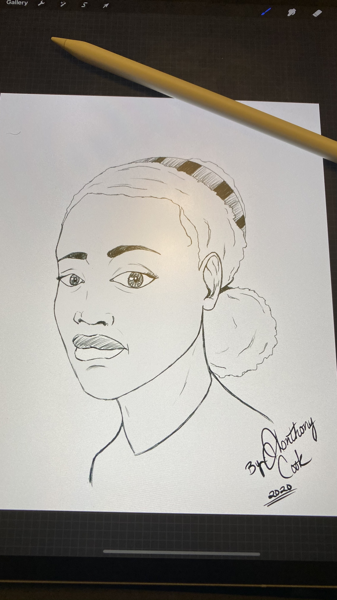
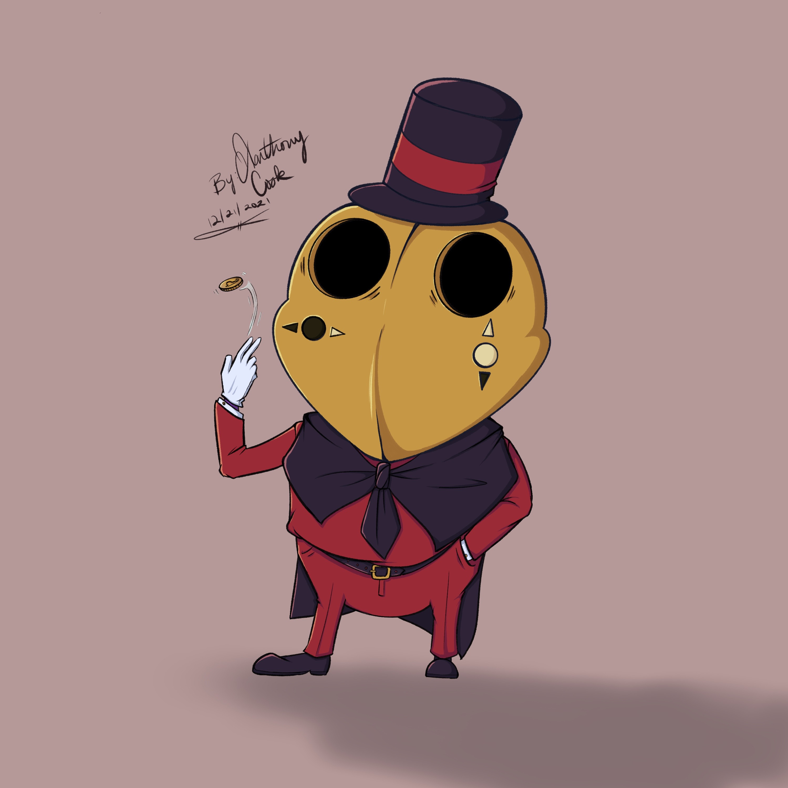


Where you'll get to know more about me
Hello, my name is Anthony Cook. I have a variety of skills that I've learned over the years. These skills include, but aren't limited to: Web development, Audio Engineering, Music performance, Art, and even orthodontic appliance manufacturing. I'll go into detail of most of those now.
For about the last 2 years I've been learning more and more about web development. I have a combination of self taught skills as well as having gone through a code bootcamp called LaunchCode. There I was exposed to different languages, frameworks and libraries. Front-end consisted of HTML, CSS, JavaScript, TypeScript, Angular, node.js, unit testing with Jasmine.js and using fetch. Back-end was focused more on Java and JUnit for unit testing. Afterwards, I started dabbling with Python, PHP, and React, though I haven't used them sufficiently in my personal projects. I've loved being able to create things with code and I can't wait to grow more as a developer.
Music is a huge passion of mine. For the last 20 years I've been playing alto, tenor and soprano saxophone. I've recorded my own original songs and have collaborated on nearly a hundred projects with musicians from around the world. I've also gotten into rapping and singing to add to my musical skillset. Audio engineering I learned completely on my own and have spent the last 14 years refining my craft.
The artwork that I've created over the years varies from photo manipulations to drawings to designing. Digital art became a huge thing for me in the past decade and I've created a lot of work that I'm proud of. I've progressed so much as an artist. Procreate on the iPad is my preferred method of drawing. Being able to create artwork anywhere has been amazing!
Now that you've learned a little about me, check out some of my work down below.
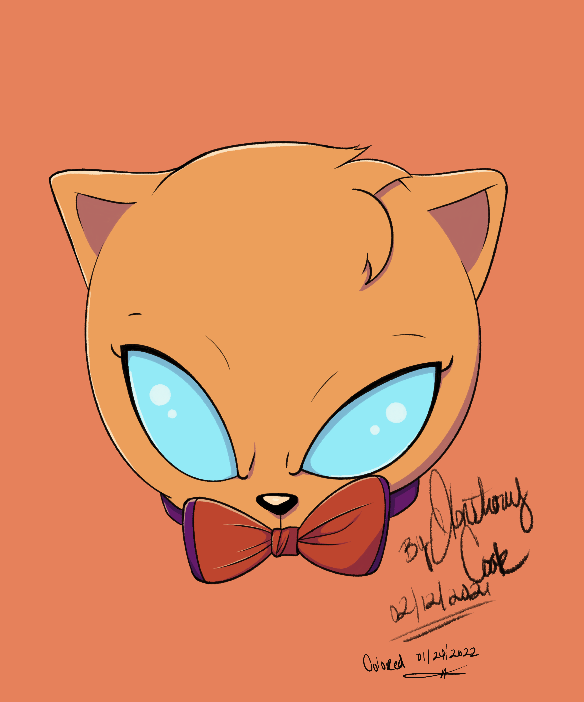
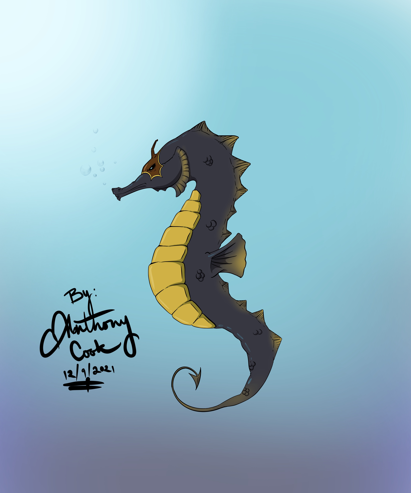
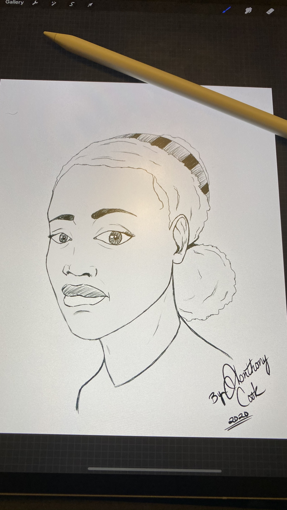
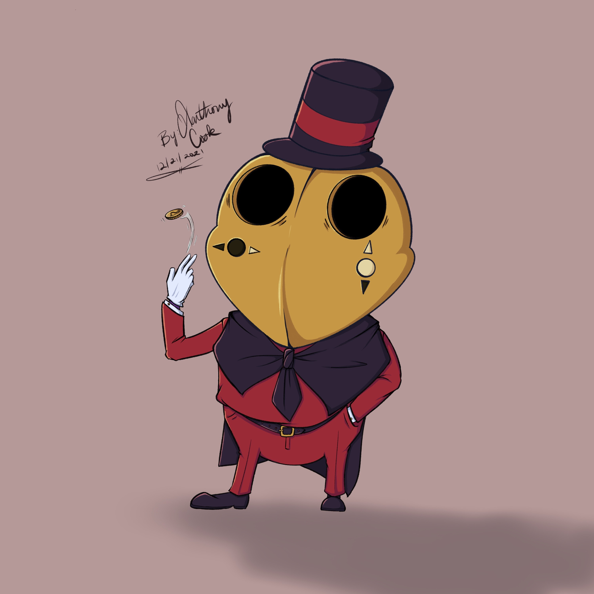